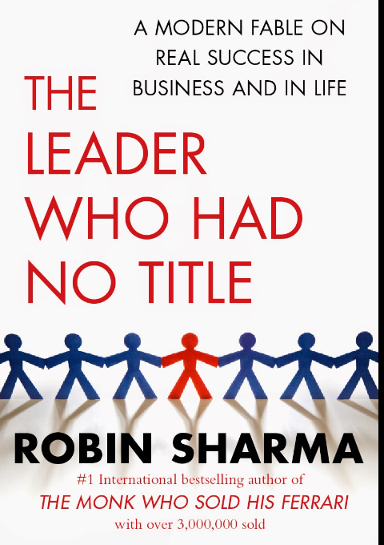

Thi is a motivational book that challenges conventional notions of leadership. Through the story of a character named Blake, Sharma illustrates that anyone can be a leader, regardless of their title. The book inspires me to embrace a leadership mindset, offering practical insights for personal development and purposeful living.
Currently stitching to this book. I would highly recommend this book to you all.
